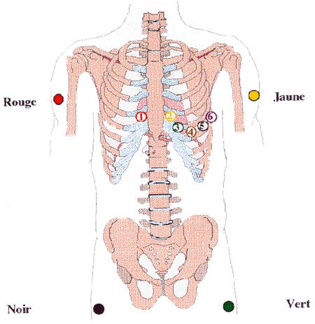

L'electrocardiographie
DefinitionL'electrocardiographie ou E.C.G. correspond a l'enregistrement de l'activite electrique qui traverse le cœur, via des electrodes cutanees positionnees dans les differents points du corps.
On appelle electrocardiogramme le trace de l'activite electrique.
Cadre legislatif- Soin infirmier relevant du rele propre : art. R.4311-5 decret 2004-802 du 29/07/2004.
Indications
- En cas de douleur thoracique.
- Etablir un diagnostic.
- En cas d'urgence.
- Lors d'un bilan pre-operatoire.
- Surveillance cardiaque.
Realisation d'une electrocardiographie
- Prevenir le patient. Lui informer que c’est un soin non douloureux, lui demander de rester calme et detendu pendant l’enregistrement pour eviter les artefacts et un enregistrement de mauvaise qualite.
- Installer le patient en decubitus dorsal, torse nu, les bras allonges le long du corps.
- Enlever tout objet metallique (montre, bijoux), eloigner tout objet touchant le lit et debrancher le lit s’il s’agit d’un lit electrique afin d’eviter les parasites.
- Verifier l’etat cutane, si besoin laver la peau et bien la secher, et couper les poils au ras de la peau pour permettre une meilleure adhesion des electrodes.
- Placer les electrodes :
- derivations standards : recueillies grece aux electrodes posees sur les quatre membres selon le code couleur :
- rouge : bras ou epaule droit.
- noir : jambe ou aine droit
- jaune : bras ou epaule gauche.
- vert : jambe ou aine gauche.
- derivations precordiales : recueillies grece aux electrodes posees sur le thorax selon une position precise :
- V1 (rouge) : 4e espace intercostal droit, au bord du sternum.
- V2 (jaune) : 4e espace intercostal gauche, au bord du sternum.
- V3 (vert): entre V2 et V4.
- V4 (brun) : 5e espace intercostal gauche, sur la ligne medioclaviculaire.
- V5 (noir) : entre V4 et V6.
- V6 (mauve) : 5e espace intercostal gauche, sur la ligne axillaire moyenne, e hauteur de V4.

- Effectuer les reglages de l'electrocardiographe : calibrage (1cm/mV), vitesse de deroulement du papier (25 mm/s).
- Demander au patient de ne plus bouger et de respirer superficiellement.
- Enregistrer.
- Noter sur l'electrocardiogramme : le nom et prenom du patient, sa date de naissance, la date et l'heure de l'enregistrement.
- Transmettre au medecin l'enregistrement.
- Stress du patient : bien le rassurer, examen pouvant etre impressionnant mais non douloureux.
- Trace parasite : verifier les branchements et recommencer.
Quand il est normal, l'ECG est dit a rythme sinusal, il presente differentes periodes electriques.

- Depolarisation des oreillettes (systole auriculaire = contraction des oreillettes) : onde de depolarisation s'etendant du noeud sinusal a travers les oreillettes : traduit l'activite du nœud de Keith et Flack.
- Habituellement de 0.08 a 0.1 seconde.
- Temps de conduction auriculo-ventriculaire.
- Habituellement entre 0,12 et 0,20 seconde.
- Depolarisation des ventricules (systole ventriculaire = contraction des ventricules) :
- Normalement entre 0.06 et 0.1 seconde.
- Cette duree tres courte indique que la depolarisation ventriculaire apparaet normalement tres rapidement.
- Si la duree du complexe QRS est prolongee (plus d'un dixieme de seconde) alors la conduction est alteree a l'interieur des ventricules.
- Repolarisation des oreillettes (diastole auriculaire = relechement des oreillettes) : se produit pendant la depolarisation ventriculaire.
- Pas d'onde visible puisque comme l'onde de repolarisation des oreillettes est relativement faible en amplitude, elle est masquee par le complexe QRS genere par les ventricules.
- Temps de repolarisation complete des ventricules
- Repolarisation des ventricules (diastole ventriculaire = relechement des ventricules).
- Plus longue en duree que la depolarisation (la vitesse de conduction de l'onde de repolarisation est plus faible que celle de l'onde de depolarisation).
Voir aussi :